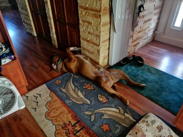
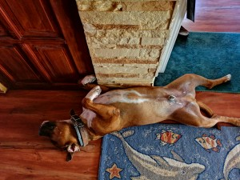
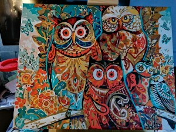
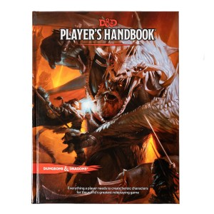
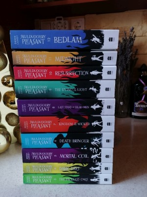

Dreilinger Vanessza Maja
Célom az hogy elvégezzem ezt az iskolát.
Mit tanultam eddig?
- Megvan a jogosítványom.
- Angolból B2-es nyelvizsgával rendelkezem
- rvrezeazfhe
Hobbijaim
Szeretek kutyét sétáltatni. Ha van ídőm és türelmem felnőtteknek készűlt kifestőket csinálni.
Ha van lehetőségem kertészkedni.
Ha össze tununk ülni barátokkal és rengeteg ídőnk van akkor egy
D&D játék remek időtőltés.




